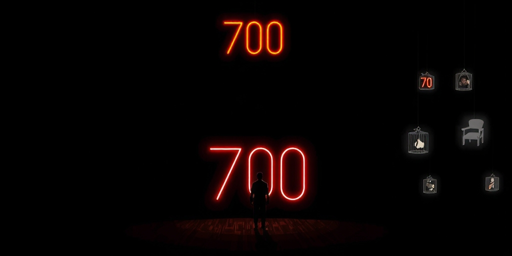
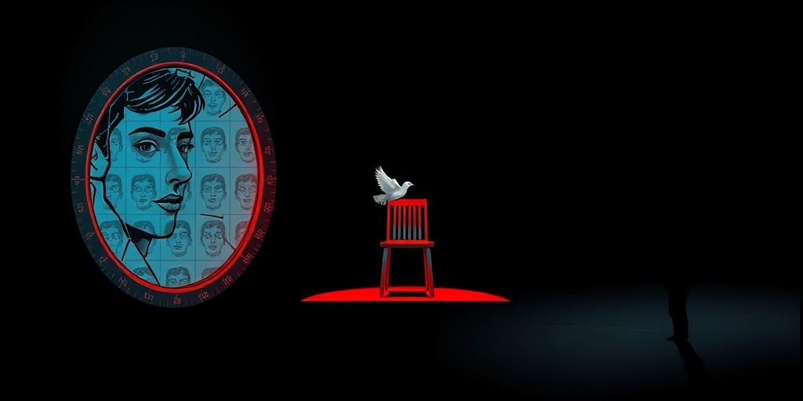
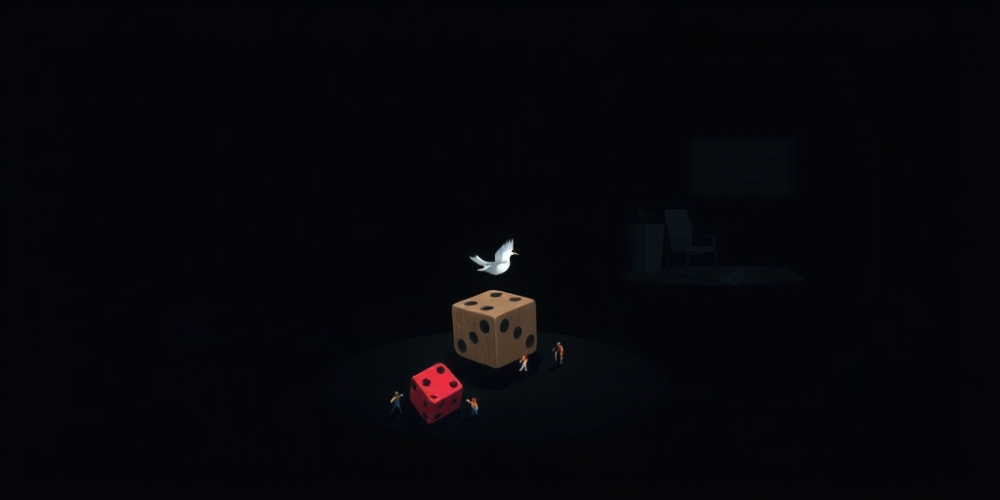
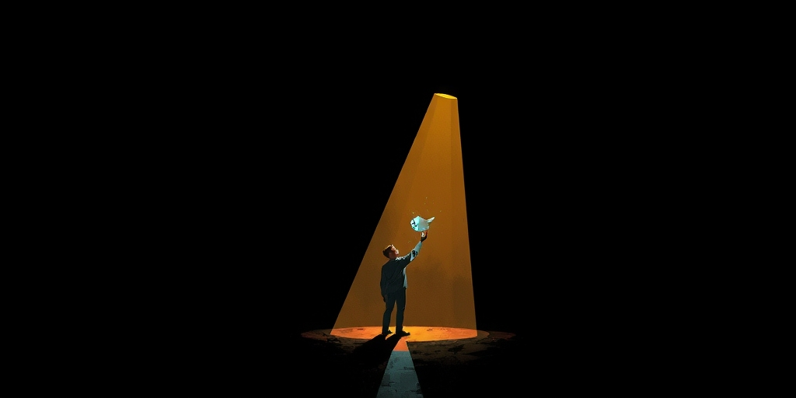

小汪老师的成长洞察 · 属于你的成长专栏
2025年，某省高考690分以上超2000人，十年前这个数字是两位数。补习班年费抵得上大学四年学费，名校毕业生起薪中位数八千块。高考正在变成一个荒诞的筛子：它让所有人付出越来越高的成本，却选不出真正对的人。如果明年北大宣布600分以上抓阄录取，世界会怎样？

700分考不上曾经保底的211，这不是段子。分数在通胀，但录取名额的扩张远追不上高分段膨胀的速度。家长砸进上百万补习费，换来的是一张月薪五千的offer。
更荒诞的是，这个信号已经失灵。高学历不再等于高能力，名校生失业不是新闻。但所有人还是被绑在同一辆战车上，因为脱离这条路，连入场券都可能没有。集体焦虑变成一种自动巡航。

当前选拔的问题不是区分，而是过度区分。录取取决于0.5分的差距时，所有人被迫去抢那最后的几分。从80分到90分可能要付出一倍努力，从95到98分，十倍的代价都不止。
这些额外投入对社会是净损失。它们没有创造出新价值，只是重新分配了名额。更讽刺的是，这种极致筛选选出来的，未必是更有创造力的人，常常只是更擅长忍受折磨或刚好多蒙对一道选择题。
我们排斥随机，因为人心里有个顽固的假设：努力必须有回报。承认随机，就是承认人生有很多事不在掌控之中。这让人恐慌。
但高考本身真的精准吗？多考一分少考一分，可能只是正好考了复习过的那道题，可能是那天没拉肚子。这种伪精确的选拔，本质上也是随机，只是它穿了一件能力的外衣。我们拒绝透明的随机，却接受了大量伪装成必然的偶然。

一个简单的方案：设定能力阈值，比如总分达到满分的80%算过关，90%算优秀。过关者不再按分数排名，而是随机抽签决定录取。
这不是放弃标准，而是重新定义标准。达标之后，边际努力归零。社会资源不用再浪费在区分95分和96分上。偏科的、晚熟的、靠奇才的类型，不再被最后一轮细筛选掉。家庭财力对“最后几分”的助推也被削弱，起点反而更公平。
还有一个意外副产品：随机性能冲开阶层固化的窄门。努力有了明确的终点线，而不是一条永远追不上的渐近线。

最常听到的反驳是：运气凭什么决定命运？可我们的命运早已被无数运气决定了——出生地、基因、遇见的第一个老师。要问的是，要不要用一种更透明的随机，代替那些隐蔽的特权。
还有人担心优秀者会被埋没。过关门槛已经保住了底线，真正的卓越会在后续证明自己。反倒是现在，更多优秀被浪费在无止境的刷题里。
也许真正的卡点不是制度设计，而是我们都不敢承认：人生本来就是随机的。接受这一点，可能反而活得轻松些。
写给你的话
如果高考的排名真有那么科学，为什么企业还是招不到合适的人？如果每一分都凝聚了汗水，为什么名校毕业后的平庸比比皆是？也许我们早就在别处接受了随机——长相、聪明、生在哪个家庭——却唯独在考试这件事上犯强迫症。放开那最后几分的执念，或许才能把注意力从无休止的竞争中抽出来，放回真正的成长和创造上去。
参考资料
[1] Is your child hearing 'yes' too often? Get ready for dark personality traits: 5 parenting habits that has negative effect on kids (The Economic Times) https://economictimes.indiatimes.com/magazines/panache/is-your-child-hearing-yes-too-often-get-ready-for-dark-personality-traits-5-parenting-habits-that-has-negative-effect-on-kids/articleshow/131610816.cms
[2] Psychology says adults who learned to depend on no one as children don't grow into self-sufficient adults; they grow into people who confuse asking for help with weakness, and slowly build a life no one else knows how to step into (The Economic Times) https://economictimes.indiatimes.com/news/international/us/psychology-says-adults-who-learned-to-depend-on-no-one-as-children-dont-grow-into-self-sufficient-adults-they-grow-into-people-who-confuse-asking-for-help-with-weakness-and-slowly-build-a-life-no-one-else-knows-how-to-step-int/articleshow/131584751.cms
小汪老师的成长洞察 · 属于你的成长专栏